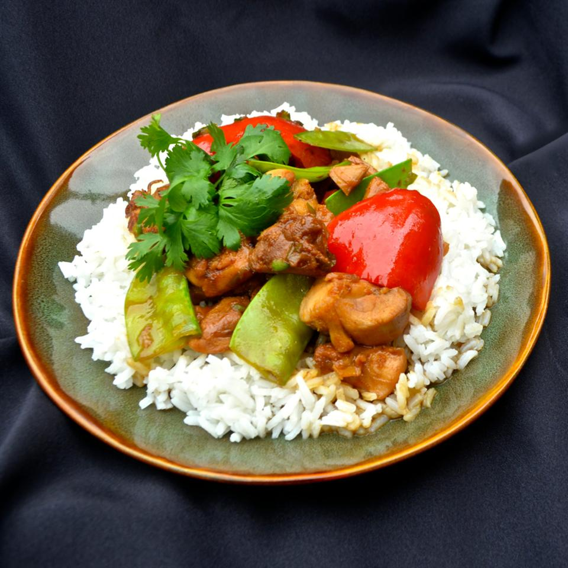

Spicy Orange Chicken

Description
This Spicy Orange Chicken has the same flavor profile as its take-out counterpart, Orange Chicken: the sweet orange, the spicy chilies, and the Asian condiments. I make this without oil, making it much lighter and very tasty.
Ingredients
- 1 cup orange juice
- 1/3 cup brown sugar
- 1/3 cup rice vinegar
- 2 tablespoons fish sauce
- 1 tablespoon soy sauce
- 1 tablespoon fresh ginger root, grated
- 1 tablespoon crushed red pepper flakes
- 2 pounds skinless, boneless chicken thighs, cut into chunks
- 1 bunch green onions, sliced, white parts and tops separated
- 1 fresh jalapeno pepper, sliced into rings
- 1/2 cup sugar snap peas
- 4 cloves garlic, minced
- 2 tablespoons grated orange zest
- 1 bunch cilantro leaves, for garnish
Steps
- Whisk orange juice, brown sugar, rice vinegar, fish sauce, soy sauce, ginger, and crushed red pepper flakes in a large bowl.
- Mix in chicken pieces and toss to evenly coat. Cover the bowl with plastic wrap and marinate in the refrigerator for 1 hour.
- Remove chicken from refrigerator and drain thoroughly in colander, reserving marinade.
- Heat a large non-stick skillet over high heat. Cook and stir chicken for 2 minutes; spoon out any excess liquid.
- Continue to cook and stir until chicken caramelizes, 6 to 7 minutes.
- Stir in white portions of green onions, garlic, and orange zest; cook and stir 2 to 3 minutes.
- Pour in half of reserved marinade. Simmer until reduced and thickened, 3 to 4 minutes.
- Stir in jalapeno pepper, bell pepper, and sugar snap peas; cook and stir until vegetables are warmed, about 2 minutes.
- Stir in green portions of green onions; cook and stir 1 minute.
- Remove from heat. Garnish with cilantro and serve.